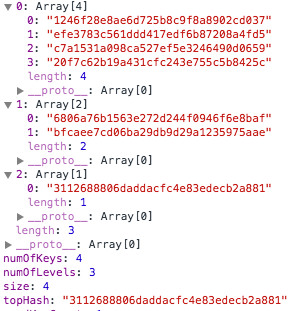
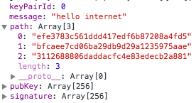

In my previous post, I went over my implementation of a quantum-computer-proof digital signature algorithm known as the Lamport signature scheme. We also learned of its greatest weakness: the keypairs can only be used once. While we can't change this property of the algorithm, we can mitigate the weakness by chaining multiple Lamport keys together into a Merkle tree.
Keypair Structure
A Merkle tree is just a tree where each node's value is the hash of its children's values. The top (or root) node has the interesting property of implicitly containing the information of the entire tree since every node's value implicitly contains the values of if it's children.
So with this in mind, we will start by generating a Lamport keypair for every message we may want to sign with this key tree (the variable keyNum). We then generate the hash of each keypair's public key and store these hashes in our tree (along with the keypairs and other useful information like the size, numOfLevels in the tree, and the topHash, which is effectively our key tree's public key).
var MerkleKeyTree = function(keyNum) {
this.size = keyNum || KEYNUM;
this._leaves = [];
this.usedKeyCount = 0;
var firstRow = [];
for (var leafNum = 0; leafNum < this.size; leafNum++) {
var keypair = new LamportKeypair();
this._leaves.push(keypair);
firstRow.push( hash(keypair.pubKey) );
}
this.levels = [firstRow];
var levels = Math.ceil(Math.log2(this.size));
for (var i = 1; i <= levels; i++) {
// for each level in the tree starting w/ 1 above the bottom
var curRow = [];
var prevRow = this.levels[i-1];
for (var k = 0; k < prevRow.length; k += 2) {
// for each hash in the previous row
// hash it and the next hash's values
var h = hash(prevRow[k] + prevRow[k+1]);
curRow.push(h);
}
this.levels[i] = curRow;
}
this.numOfLevels = this.levels.length;
this.numOfKeys = this._leaves.length;
this.topHash = this.levels[this.levels.length - 1][0];
};
So here's what the Merkle tree in our key tree looks like, with each array containing the hashes of its two child hashes:

Message Signing
To use this tree to sign a message, we have to:
- Select a keypair (
leaf) and use it to generate a signature. - Publish the signature, along with the path of hashes at each level necessary to recreate the
topHash
We must publish the path so that once the user verifies that the Lamport keypair we used was legitimate, they can hash the public key + sibling public key, and continue hashing these hashes + their siblings until they reach the topHash.
MerkleKeyTree.prototype.sign = function(msg) {
var finalSig = {};
if (this.usedKeyCount === this.size - 1) {
throw new Error('This is your last keypair on this tree);
}
// select the first unused keypair
for (var i = 0; i < this.numOfKeys; i++) {
if (!this._leaves[i].used) {
var randomKeypair = this._leaves[i];
var randomKeypairIndex = i;
break;
}
}
finalSig.keyPairId = randomKeypairIndex;
finalSig.pubKey = randomKeypair.pubKey;
finalSig.message = msg;
finalSig.signature = randomKeypair.sign(msg);
// create the path of the hashes needed to get from the
// published keypair to the topHash
finalSig.path = [];
var curLevel = 0;
var idx = randomKeypairIndex;
while (curLevel < this.numOfLevels) {
if (idx % 2) {
finalSig.path.push(this.levels[curLevel][idx - 1])
} else {
finalSig.path.push(this.levels[curLevel][idx + 1])
}
curLevel++;
idx = parentIdx(idx);
}
// publish the signature, set key properties
finalSig.path[finalSig.path.length - 1] = this.topHash;
randomKeypair.used = true;
this.usedKeyCount++;
return finalSig;
};
Here's an example signature of a message signed by the key tree above:

Message Verification
To verify a signature, we must first verify signature against pubKey, just as we would with a traditional Lamport key. Then, we'll have to hash the pubKey and hash the result (in the right order) with its sibling key's hash, and keep taking the output and hashing it with its sibling in the next level of the key tree until we end up with one, lone hash.
MerkleKeyTree.prototype.verify = function(sigObj) {
var idx = sigObj.keyPairId;
var lamport = this._leaves[idx];
// if this is a valid Lamport signature...
if (lamport.verify(sigObj.message, sigObj.signature)) {
// ... calculate the sibling hashes until you reach the topHash
var h = hash(sigObj.pubKey);
for (var i = 0; i < sigObj.path.length - 1; i++) {
var auth = sigObj.path[i];
if (idx % 2) {
h = hash(auth + h);
} else {
h = hash(h + auth);
}
idx = parentIdx(idx); // gets the parent level hash index
}
if (h === sigObj.path[sigObj.path.length - 1]) { return true; }
}
return false;
};
If at the end of this process we end up with the string at the end of our path array (which is also our topHash), we'll know that the key used to sign the message belongs to this key tree and this topHash (which should match up with the topHash of the expected owner and message signer).
In conclusion, with this signature scheme, we've allowed a user to generate one large key tree that can be used to sign arbitrarily many messages (including newer keytrees) while only marginally increasing the signature size. While this can't be used for secretly encrypting messages, in many applications (e.g. authenticating cryptocurrency transactions), a signature scheme is just enough.
I hope both of these posts have shed some light on how wild yet understandable some cryptographic concepts can be. You can always check out my repo here and as always, thanks for reading!